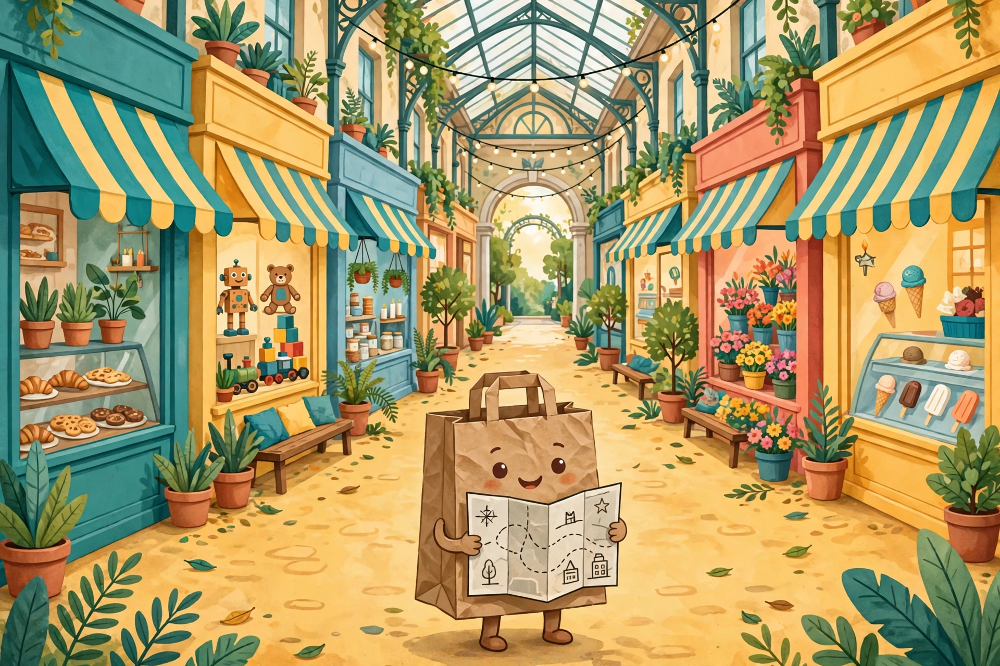
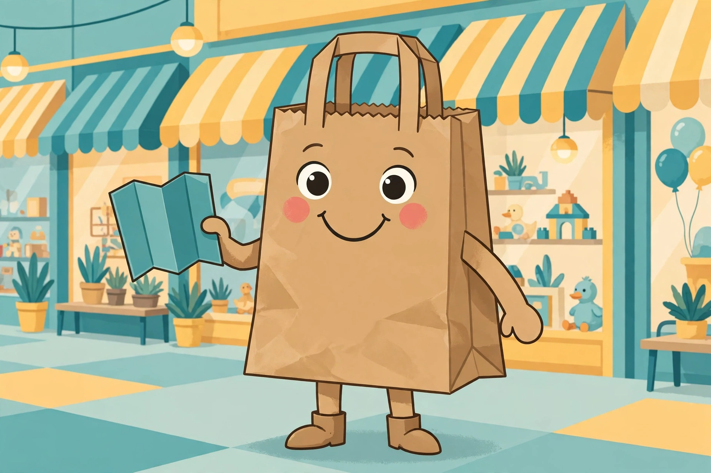

Welcome to the Grand Arcade — five departments under a glass roof, and every product deep-linked to its home site.
Meet Molly the Mall Map, the mascot of this world.

The Signature Cyber Mega-Mall gathers 8,821 products from across the network into five departments — AI & Software, Compute, Inventions, Knowledge, and Tools — each one deep-linked to its live source page.
Two working tools, right here on the page. Each one says what it does and what it cannot do. Neither tool reaches the live web, and neither one needs a key.
Pick a department to get its product count, from the live index.
Department:
Search the 500-product sample on this page. Shows up to 10 matches, each with its department.
Search:
Designs, printables, and demos — free, downloadable, usable on the page. Every product is labeled Signature or Fun. Nothing here is for sale.
A printable map of the Grand Arcade: five departments, the glass roof, and the benches, with room to mark a route.
Making: print the printable file, draw a route through the five departments, and follow it on the mall page.
A poster of the arcade at opening time: striped awnings, plants, and Molly the Mall Map reading her map.
Making: print the printable file and pin it up. The shops on it are drawings, not real shops.
Printable labels for products, with spaces for the name, the department, and the source site.
Making: print the printable file on sticker paper, cut along the outlines, and label a shelf or a notebook.
Download all product lines as a printable (text)
Molly the Mall Map once folded her map so many times it became a paper airplane, and flew it straight down the arcade to the flower shop. The flowers waved back. (Fun — a made-up tale, not a record.)